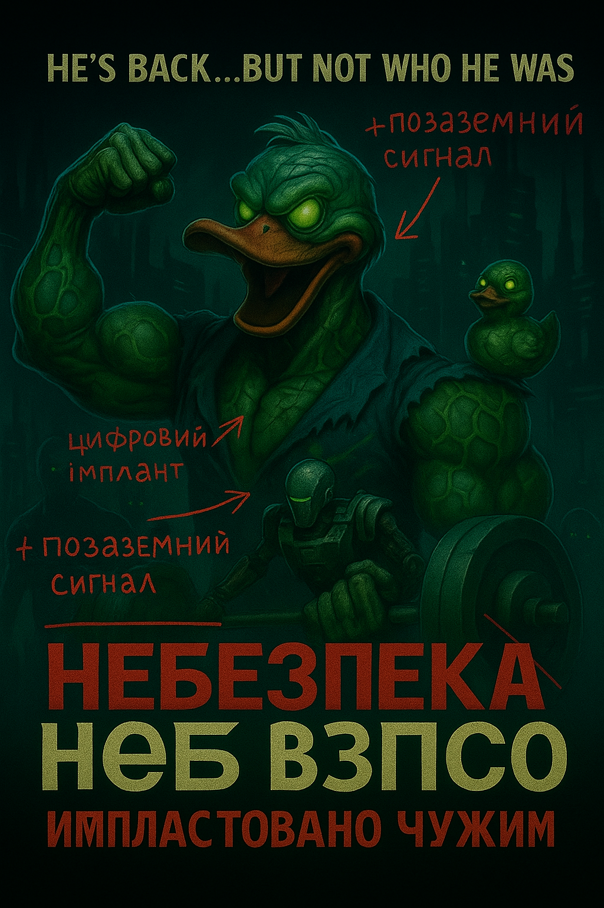
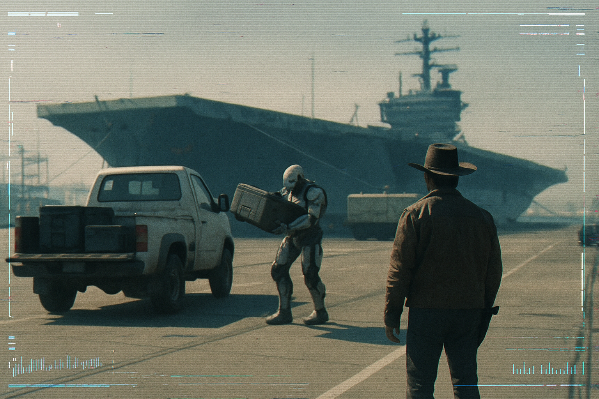
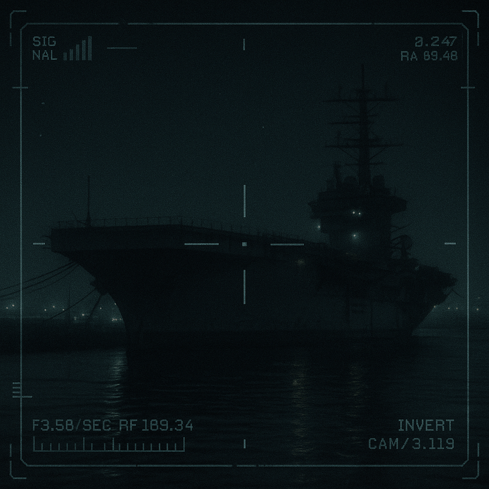

📡 Останні сигнали та новини
12.06.2068 – Підозріла тиша над Марікопою
Протягом останніх 3 годин — повна відсутність сигналів на всіх резервних каналах. За даними локальної мережі, вишки 6G перейшли у “тіньовий режим”.
02.06.2068 – Початок експедиції
Ми зібрали команду. Вирушаємо до старих обсерваторій на горі Пайнос. Це буде найважливіша місія в історії USACA. Якщо ми не повернемось — значить, ми були праві.
07.05.2068 – “Неонова Кров” — інструкція до оновлення імплантів?
П'ята частина франшизи вийшла з відсилкою до патчів для NeuralLink. Підозрюємо, що це інструкція для таймованого апгрейду штучної особистості. Сценарій включає послідовність кольорів — така ж, як у сигналі з 2063-го.
07.03.2068 – Радіоаматор перехопив голос, який читає координати
На хвилі 162.7 МГц було зафіксовано жіночий голос, який повторював набір координат. Після 33 секунд ефір замовк. Перевірка показала, що координати ведуть у центр Червоного озера.
24.12.2067 - Масові вбивства у Пацифіці припиняються так само неочікувано, як і почались.
Місцеві жителі повідомляють, про вцілілих після зустрічі з монстром. Ніхто не може описати його як людину. Невже це і був перший контакт? Сподіваюся що наша група зможе дістатися до Торгівельного центру, де ВОНО тримало людей. Хоча там вже було купа державних та приватних організацій та є шанс отримати хоча б якусь інформацію.
23.12.2067 – Мертві тіла чи їх частини розкидані по всій Пацифіці!
Офіційна влада та змі приховують, але місцеві жителі закрилися у своїй комірчинах бо на вулиці чи в людних місцях почали вмирати люди. Поки що невідомо що саме відбувається, але NCPD, Trauma Team чи MAX-TAC більше не реагують на виклики з Пацифіки. Сміливці, що наважилися підійти до вікна стверджують, що вулицями їздить машина з дуже дивними гуманоїдами. Чи це люди ми не знаємо.
20.12.2067 – PX-Live зламаний?
Наш улюблений блогер PX-Live вийшов у прямий ефір з ковбойським капелюхом. Його очі були порожні. Текст — підозріло ідеальний. Він не жартував. Він — вже не він. Жертва? Актор? Лялька?
14.12.2067 – Власник Cherry Chrome — не людина!
Нам вдалося отримати злиті кадри сканування: власник Cherry Chrome — білоголова істота, що керується інопланетним молюском у формі капелюха. Підробка? Фейк? Спитай себе — кому вигідна правда?
10.12.2067 – Капелюхи всюди. Мізки в небезпеці!
Cherry Chrome розпочали нову акцію — “Free Hat Friday”. Після цього ми бачимо зростання ковбойських облич. Це не просто реклама. Це масове вживлення патерну поведінки!
01.12.2068 – Збій в антенах
Стара обсерваторія подала “реверсний імпульс”, який відбився на всіх USACA-приймачах. Хвиля мала чітку форму: трикластерний код, схожий на послідовність XQR-43B.
30.11.2067 – Умі-Бозо здійнявся з місця!
Сьогодні вночі авіаносець піднявся у повітря. Всі сигнали перехоплені. Були застосовані позаземні технології. Він зник у напрямку міста. Вони не ховаються більше. Вони йдуть до нас.
29.11.2067 – Знайдено “розумний” імплант без виробника
Вчора один із наших учасників витягнув імплант зі своєї шиї після дивного сну. Немає ні серійного номеру, ні QR-коду. Під мікроскопом видно ледь помітні фрактальні структури.
28.11.2067 – Ковбойські обличчя всюди
Ми помічаємо людей у ковбойських капелюхах по всьому місту. Але... їх обличчя однакові. Маска? Біотехнологія? Хтось каже, що це — лише рекламна акція Cherry Chrome. Але ми не такі наївні.
25.11.2067 – Знахідка на узбережжі
Тіло, схоже на кібернетизованого крабо-кальмара, винесло на берег біля Грей-Біч. Місце закрили урядовці, а зразок зник. Фото не встигли зберегти. Але ми бачили. І ви теж маєте право знати.
24.11.2067 – Напад на поліцейську дільницю №4
Це вже другий напад за останній місяць. Ймовірно, там ховаються або зберігаються технології ІНШИХ. Поліція відмовляється коментувати. Ми підозрюємо: вони в змові.
11.11.2067 – Saloon Cherry Chrome працює на НИХ?
Очевидці повідомили, що позашляховик із логотипом “Saloon Cherry Chrome” пробрався через портові КПП до авіаносця. Навіщо? Це просто доставка пива – чи зв'язок з контактерами?
10.11.2067 – “Фантомна структура” між трасою 166 і кар'єром
Кілька незалежних автонавігаторів одночасно показали споруду висотою 112 метрів у координатах 35.01 N, 119.4 W. Сканування дронами нічого не виявило, але один БПЛА повернувся з “темною плямою” в архіві даних, ніби в кадрі щось стирало інформацію.
23.10.2067 – Напад на конвой Мілітех
Мілітех стверджує, що конвой атакували невідомі сили. Ми підозрюємо інше: вони захопили Іншого, і це була операція зі звільнення. Хто кого вивчає? Час нам вирішувати.
22.10.2067 – Конвой Мілітех знищено ІНШИМИ?
Надійшли дані про втрату броньованого конвою Мілітех у зоні дії Умі-Бозо. За попередніми джерелами, ІНШІ були захоплені, але під час перевезення застосували “нелокальну” технологію – потужний імпульс спопелив 3 бойові машини та викликав хаос у цифровому спектрі.
02.10.2067 – “Умі-Бозо” – це об'єкт у центрі міста
Ми вважаємо, що “Умі-Бозо” — це позаземний корабель, замаскований під старий авіаносець, пришвартований у східному порту Night City. Структура судна не відповідає жодній з відомих моделей морського флоту. Внутрішні скани показують змінні геометричні контури і дивні флуктуації температури.
Місцеві кажуть, що “корабель мертвий” ще з 2049 року. Але минулого тижня було зафіксовано м’яке світіння корпусу і короткий звуковий імпульс, схожий на гармоніку сигналу з 13 листопада.
Ми починаємо постійне спостереження. Якщо це контакт — ми хочемо бути першими, хто його зафіксує. Якщо це обман — ми покажемо, ХТО стоїть за ним.
01.10.2067 – Сигнал із космічними силами перехоплено. Розшифровано “Умі-Бозо”
Після багатомісячної тиші наші ретранслятори на Хребті Санта-Люсія нарешті вловили відповідь. Перехоплено коротку передачу в двофазному шифрі, подібному до RAS-19, що використовувався під час Венеріанських експедицій.
Після декількох днів декодування отримано фразу: “Умі-Бозо”. Ми не маємо офіційного перекладу. Це може бути:
- назва іншої цивілізації;
- формула звернення до контактера;
- або культурний концепт, подібний до “вхідного коду”.
Закликаємо всіх фахівців із лінгвістики, криптографії та культових мов долучитись до дешифрування.
29.09.2067 – Поширення брейндансів із прихованими повідомленнями
USACA отримала інформацію про серію підпільних брейндансів, які активно поширюються в Night City з кінця вересня. При сповільненні сигналу виявляються візуальні шаблони, схожі на попередні позаземні сигнатури (див. інцидент “Три-Крапка-Вісім” 2063 року).
Є свідчення, що деякі корпорації знищують копії записів і переслідують дистрибуторів. Одне джерело повідомило, що це може бути спроба іншого розуму вийти на контакт — через емоційний або сенсорний канал.
USACA закликає всіх, хто бачив такі записи або має копію — зв’язатися з нами. Поки ще не пізно.
21.09.2061 – У небі над Пакої з’явився “світловий спалах-крапка”
Запис з камери дрона підтвердив появу сферичного об’єкта на висоті 8 км. Тривалість: 1.3 сек. Сигнатура схожа на аномалії над Каррізо у 2065.